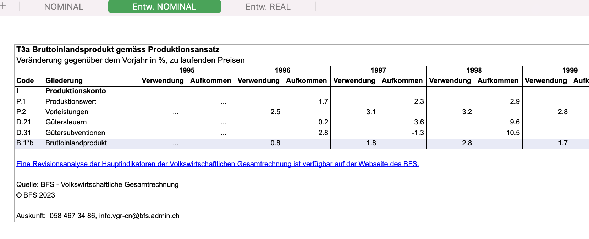

2 ORD Project Plan
The following sections explain our approach in greater detail. Though working packages can be seen as stages in general, working packages are not strictly sequential as some activities are continuous efforts. The subsequent chapter gives an overview that shows responsibilities within the team and intensitvity of activities throughout the project.
2.1 WP0: Coordination and Planning
Activity 0.1: Meetings with Data Provider Management and Operations
Activity 0.2: RSEED Meetup Series
RQ 0.1: Which channels and formats work to keep the dialogue active and sustainable?
RQ 0.2: How can we integrate usage of publicly available data into teaching?
During the starting stage of our project, we coordinate with major public data providers and involve data sources in our planning early on. We do so to establish and maintain active, lively communication between public data providers and the scientific community.
Publicly available economic data provided by the Federal Statistical Office (FSO), the Secretariat of Economic Affairs (SECO), the Swiss National Bank (SNB), and regional Statistical Offices are important sources for economic research and monitoring of the Swiss economy. To develop an ORD spirit and a community of a data providers and scientific users of the data, it is crucial to involve these public institutions early on. Early dialogue helps to avoid redundancies with existing data community initiatives and to develop a common understanding of open data, machine readability and datasets of priority.
One of the core ideas is to leverage the investment into open data by integrating public data into academic teaching to strengthen the connection between public administration and academia. To explore how to effectively use the joint expertise of public data providers, domain experts, data stewards of the ETH domain, and data engineers, we launch a series of monthly meetups early in the process. The meetups are designed to foster inclusive, expert discussions through publicly pre-circulated content. We are working to integrate our meetup series into the academic curriculum at ETH, but we keep the series open to interested participants beyond academia.
2.2 WP1: Make Data Processing Framework Inclusive
Activity 1.1: Implement Core Library for Standardized Data Processing
Activity 1.2: Modularize Provider Specific Data Ingestion Processes
Activity 1.3: Document Processing Framework
RQ 1.1: What are the key components of a framework to ingest data for scientific use?
RQ 1.2: How can we isolate idiosyncrasies for optimal reuse of code?
RQ 1.3: What makes documentation of open source software and open research data inclusive?
In Work Package 1 (WP1), we lay the technical foundation for turning KOF Swiss Economic Institute’s existing production process of macroeconomic time series into an open-source framework that creates publicly available, machine-readable scientific-grade time series in fully reproducible fashion. Our approach uses license cost free open source software and aims to publish not only the resulting time series data but also the technical framework and infrastructure setup. Doing so ensures reproducibility and helps to comply with FAIR principles. Thanks to our infrastructure-as-code approach we can publish information on an ideal runtime environment to help others operate their own instance of the opents framework.
Because an active community is inevitable to keep the project sustainable, i.e., well maintained, we chose the R Project for Statistical Computing as our main programming language for the implementation of the framework. R is known for its large and inclusive community with its annual user conferences (inclusivecon?) and vibrant local communities1 . Alongside its strong regional and international community, the fact that R is open source and free of license costs lowers the barrier to entrance and contribution considerably. In addition, R offers well-established boiler plating ecosystems like usethis (Wickham et al. 2023) and documentation frameworks such as pkgdown (Wickham, Hesselberth, and Salmon 2022) or Roxygen (Wickham et al. 2022).
WP1 focuses on the homogenization of the data ingestion process across datasets and data providers. In the first implementation step, we identify common parts of the ingestion process. We bundle these common parts in an R package that forms our core library and fosters reuse of source code. We encourage the community to use our core packages and to contribute by adding further dataset-specific packages. To inspire contributions, we supplement the opents core, based on our long-term experience as consumers of public data, with provider-specific ingestion libraries written in R that cover dataset idiosyncrasies.

The above screenshot shows a traditional data publication of an official GDP statistic. Its use of multiple worksheets, empty lines and multi-line headers hampers machine readability. Like many regular consumers of the information contained in this spreadsheet, KOF ingest this information immediately after its publication.
To have a homogeneous, machine-readable representation of the data, we split this information into two files: based on the CSV on the web idea by the World Wide Web Consortium (W3C), we use a long format CSV file for the data and a JSON file for the metadata. The metadata file takes advantage of the JSON format’s ability to handle nested data to store comprehensive, multilingual meta information. Our collaborative approach with the Secretariat of Economic Affairs (SECO) led to a pioneering pilot publication of machine-readable data on the official SECO website: Machine-readable data is published in complementary fashion to the traditional GDP publication2.
At the end of WP1, we plan to iterate over the resulting datasets and data descriptions and enhance meta information where necessary. We do so in reproducible and transparent fashion by adding all changes to the source code that produces the data and metadata files.
2.3 WP2: Publication
Activity 2.1: Publication of Data Processing Framework
Activity 2.2: Publish Containerized Runtime Setup
Activity 2.3: Publish Data Processing and Revision Monitor
Activity 2.4: Publication of Time Series Datasets for Scientific Use
RQ 2.1: Which publication channels foster reuse of our code in other fields?
RQ 2.2: How can facilitate deployment of our setup in other environments?
RQ 2.3: Which information on data revisions and processing does the scientific (forecasting) community need benchmark their work?
RQ 2.4: How can facilitate deployment of our setup in other environment?
The goal of Work Package 2 (WP2) is to find the platforms that suit our community, data and code components best and facilitate our approach to ORD. We will involve our data consumers and collaborators into this decision-making process. Based on our open by default* thinking, we will publish not only the resulting time series data and meta information, but all components of our software framework. In the process, we will work together with the ETH legal service to find the most suitable open source licensing solution3 for all components of the opents project.*
The opents approach, suggested here, splits data and meta information into two separate text files and formats: a simple CSV spreadsheet and a nested JSON file for multilingual data description. Having two simple text files per dataset allows us to disseminate the resulting time series data on free, standard infrastructure such as GitHub, which is well established in the open-source community. The state-of-the-art rendering of CSV spreadsheets of modern git platforms sets the barrier to exploring and consuming our scientific use time series datasets as low as possible. Hence, the publication of data on GitHub, possibly using git’s Large File Storage (LFS) extension, forms our baseline scenario. Yet, in WP2, we explore the feasibility of other, complementary, regional and international publication channels such as opendata.swiss4, r-universe or Zenodo.
Technically, the opents framework consists of a core R package and several data provider-specific ingestion packages. Again, we see the publication of all these components as open-source libraries on GitHub (or another major Git platform with good visibility) as the baseline form of publication. In addition, WP2 explores which of our components are suitable for a publication on the Comprehensive R Archive Network (CRAN). Publication on CRAN comes with requirements and quality control but opens up our work to a larger audience as endusers face the lowest possible hurdle to install our packages.
We will also explore more recent and experimental approaches, such as r-universe which helps to improve our reach in the data science community. In WP2, we aim to expose our work to an rOpenSci peer review. rOpenSci shares our values of open and reproducible research through reuse and helps us reach ORD excellence.
2.4 WP3: Facilitate Usage and Applications
Activity 3.1: Integrate opnts Framework and Data into Hacking for Science Courses
Activity 3.2: Organization of a Community Event
RQ 3.1: What degree of data engineering literacy do scholar from different fields of research need?
RQ 3.2: Future Outlook – What are the next steps to extend opents to other fields?
The goal of work package 3 (WP3) is to promote usage of the framework and data as well as to encourage others to contribute. In particular we are looking for community contributions such as maintenance of existing datasets, addition of public datasets that have not yet been processed and community activities. At this stage, we will also intensify activities to explore the expansion of opnts* into different academic fields.*
We plan to approach the above goals in three ways: i) integration of opnts data and software into academic teaching aimed at scientists from different disciplines. ii) presentation of opnts at useR! 2024 in Salzburg, Austria5. iii) participation in local community events iv) hosting of an own event at KOF.
Starting in fall 2024, opnts data and software will be integrated into the Hacking for Science course6. Originally created for ETHZ D-MTEC PhD students, Hacking for Science is a highly interactive online course whose big picture guidance and hands-on software development approach continues to draw interest from students from a variety of fields. The course last iteration welcomed students from more than 10 different ETH departments as well as guests from outside ETH. We aim to communicate the value of open data to this broad audience and learn which challenges ORD faces in different fields. Currently, we also explore the possibility of running Hacking for Research Assistants – a satellite event for research assistants. In addition our teaching is complemented by the RSEED seminar series started in early 2024 which gives us an additional channel to promote an ORD mindset.
Centered around the submission of opents to useR! 2024, we plan further activity at conferences and community events. At ETH, the Scientific Computing group has recently founded a Research Software Engineering (RSE) group7 to connect software engineers in science at ETH. Regular RSE events at ETH as well as the vibrant, local open source and opendata community8 will gives us a chance to present the opnts project, e.g., at the RSE group or the local R user group. KOF hosted useR! in 2021 and is well connected to the R community. This history and connections gives a great chance for a successful application to host an existing special interest conference such as R in Official Statistics at KOF. Hosting a well-established, smaller special interest conference allows us to give the entire event an ORD focus push ORD excellence in Official Statistics.
Bannert (2024 forthcoming) discusses the importance of communities for the learner, including experience from hosting the useR! Conference 2021 which KOF co-chaired.↩︎
See also: https://www.seco.admin.ch/seco/en/home/wirtschaftslage—wirtschaftspolitik/Wirtschaftslage/bip-quartalsschaetzungen-/daten.html↩︎
see https://choosealicense.com/↩︎
https://opendata.swiss↩︎
useR! is the annual conference of R users. useR! conference usually draw more than 1’000 international users from a large variety of fields. See also https://events.linuxfoundation.org/user/↩︎
See also: https://ethz.ch/en/the-eth-zurich/education/innovation/kite-award/kite-award-2022/nominierte-projekte-kite-award-2022/hacking-for-social-sciences.html↩︎
The RSE group is already well connected to the global RSE movement, partiuclarly to the Society of Research Software Engineering in the UK. See also https://rse.ethz.ch/↩︎
see events such as opendata beer, lovedata week↩︎